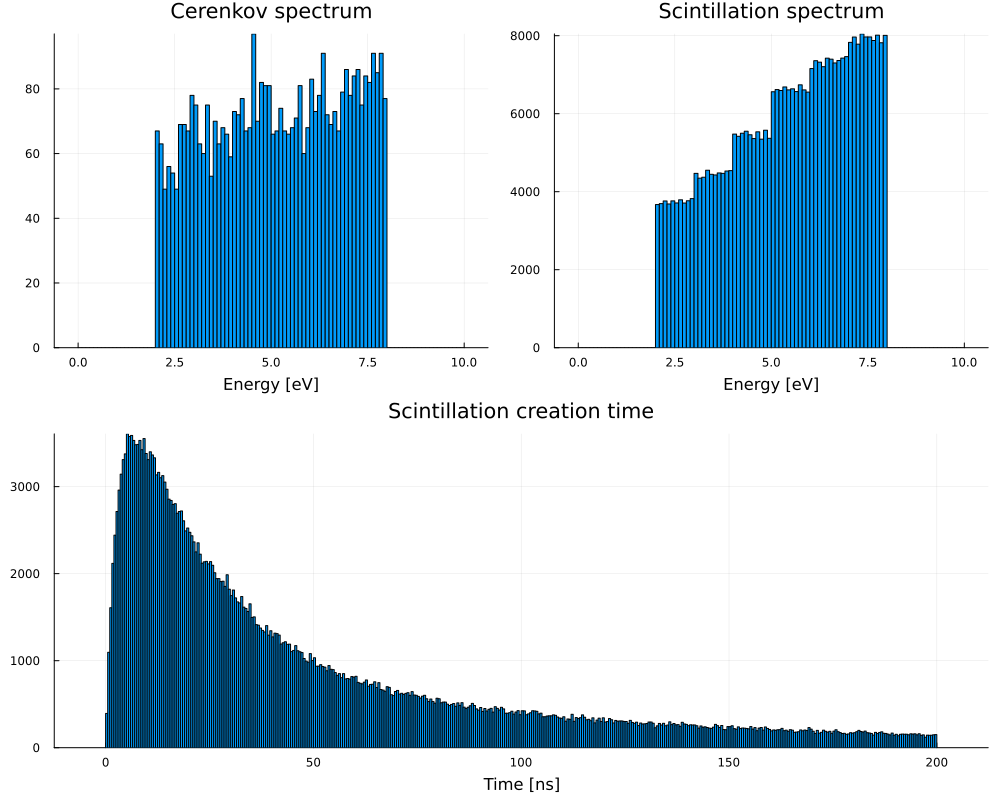
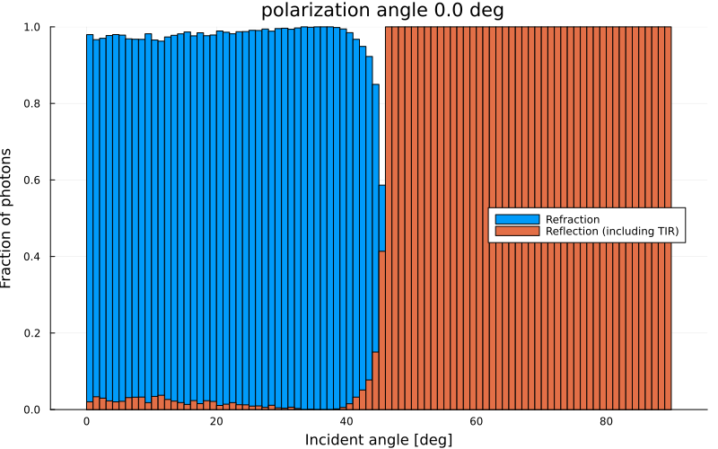
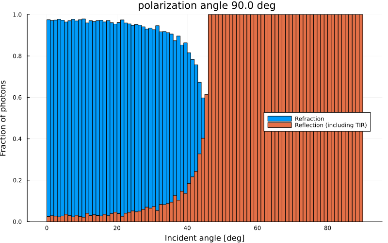
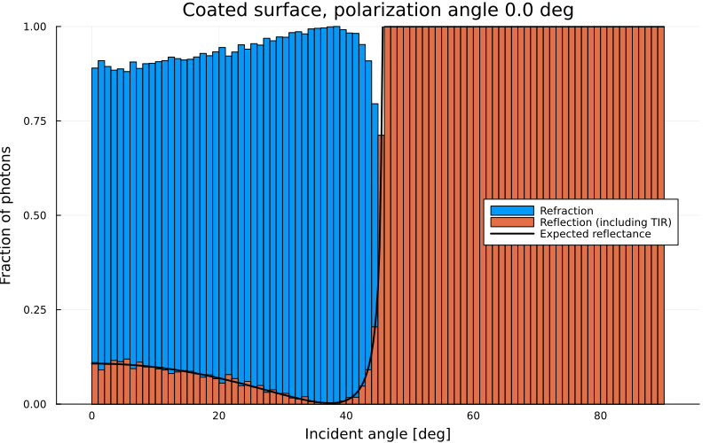
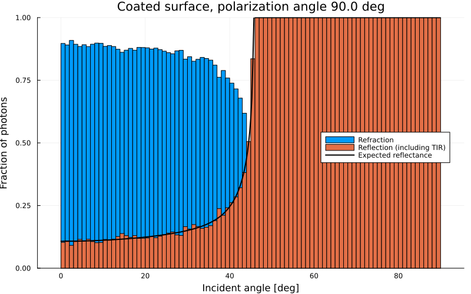
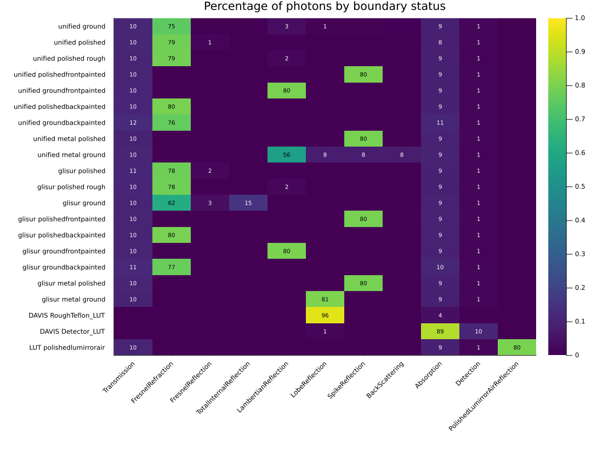

OpNovice2 Example
This example is a translation to Julia of the Geant4 example extended/optical/OpNovice2. It investigates optical properties and parameters. Optical photons are shot at the surface between a cube "tank" and the "world" around it. The example records the details of the boundary interactions on that surface, and of the generation (Cerenkov, scintillation, wavelength shifting) and transport of optical photons.
The C++ example configures the optical properties with UI commands (/opnovice2/boxProperty, /opnovice2/surfaceFinish, ...). In Julia they are keyword arguments of the detector. Four of the macros of the C++ example are reproduced here:
electron.mac: electrons cross a scintillating BGO tank and produce Cerenkov and scintillation photons.fresnel.mac: photons of fixed polarization and random direction hit a polished surface. The fractions of reflected and refracted photons as a function of the incident angle show the Brewster angle and the critical angle for total internal reflection.coated.mac: photons hit a surface with a thin coating. The reflectance is compared with the analytic formula for thin-film interference.boundary.mac: photons hit a surface with each of the optical surface models (unified, glisur, DAVIS and LUT) and finishes (polished, ground, painted, ...), and the outcomes of the boundary process are compared.
You can also download this example as a Jupyter notebook and a plain Julia source file.
Table of contents
- Loading the necessary Julia modules
- Define the Detector
- Define the Physics List
- Define the Primary Generator
- Define the Simulation Data
- Define the User Actions
- Create the Application
- Configure, Initialize and Run
Loading the necessary Julia modules
Load the Geant4, Geant4.SystemOfUnits and Geant4.PhysicalConstants modules, FHist and Plots for the histograms and Printf to format the run summary.
using Geant4
using Geant4.SystemOfUnits
using Geant4.PhysicalConstants
using FHist, Plots, PrintfDefine the Detector
The detector is a cube of side 2 m (the tank) inside a cube of side 20 m (the world). The materials of both volumes and their optical properties, as well as the type, model and finish of the optical surface between them, are parameters of the OpDetector structure. We include the OpDetector.jl file not to clutter the example.
include(joinpath(@__DIR__, "OpDetector.jl"))We define two detectors, one for each of the studies reproduced from the C++ example.
The detector for electron.mac: the tank is made of BGO with scintillation properties (three components with different emission spectra and time constants) and the surface is ground. The energies and lengths are given with their units.
The C++ example sets the Birks constant of the tank material to 0.126 mm/MeV. The method G4IonisParamMat::SetBirksConstant is not available in Geant4.jl, so here Geant4 uses its default Birks constant for G4_BGO (0.0084 mm/MeV). The scintillation yield is less quenched and about 15% more scintillation photons are produced.
electron_detector = OpDetector(
tankMaterial = "G4_BGO",
worldMaterial = "G4_AIR",
tankProperties = PropertyMap(
"ABSLENGTH" => ([2eV, 5eV, 8eV], [1mm, 2mm, 3mm]),
"RAYLEIGH" => ([2eV, 8eV], [1mm, 1mm]),
"RINDEX" => ([2eV, 8eV], [1.3, 1.4]),
"SCINTILLATIONCOMPONENT1" => ([2eV, 5eV, 8eV], [1.0, 1.1, 1.3]),
"SCINTILLATIONCOMPONENT2" => ([2eV, 3eV, 4eV, 5eV, 6eV, 7eV, 8eV], [0.1, 0.2, 0.4, 0.6, 0.8, 0.9, 1.0]),
"SCINTILLATIONCOMPONENT3" => ([2eV, 5eV, 8eV], [0.2, 0.1, 0.05])),
tankConstProperties = ConstPropertyMap(
"SCINTILLATIONTIMECONSTANT1" => 20ns,
"SCINTILLATIONTIMECONSTANT2" => 100ns,
"SCINTILLATIONTIMECONSTANT3" => 200ns,
"SCINTILLATIONYIELD" => 5000/MeV,
"SCINTILLATIONYIELD1" => 1.0,
"SCINTILLATIONYIELD2" => 1.0,
"SCINTILLATIONYIELD3" => 0.1,
"RESOLUTIONSCALE" => 1.0,
"SCINTILLATIONRISETIME1" => 3ns,
"SCINTILLATIONRISETIME2" => 10ns,
"SCINTILLATIONRISETIME3" => 20ns),
worldProperties = PropertyMap(
"RINDEX" => ([2eV, 8eV], [1.01, 1.01]),
"ABSLENGTH" => ([2eV, 5eV, 8eV], [100mm, 100mm, 100mm])),
surfaceFinish = ground,
surfaceSigmaAlpha = 0.2,
surfaceProperties = PropertyMap(
"SPECULARLOBECONSTANT" => ([2eV, 8eV], [0.1, 0.1]),
"SPECULARSPIKECONSTANT" => ([2eV, 8eV], [0.1, 0.1]),
"BACKSCATTERCONSTANT" => ([2eV, 8eV], [0.1, 0.1]),
"TRANSMITTANCE" => ([2eV, 8eV], [0.1, 0.1]),
"REFLECTIVITY" => ([2eV, 8eV], [0.8, 0.8]),
"EFFICIENCY" => ([2eV, 8eV], [0.1, 0.1])))Main.var"##142".OpDetector
worldHalfSize: Float64 10000.0
tankHalfSize: Float64 1000.0
worldMaterial: String "G4_AIR"
tankMaterial: String "G4_BGO"
tankProperties: Dict{String, Tuple{Vector{Float64}, Vector{Float64}}}
tankConstProperties: Dict{String, Float64}
worldProperties: Dict{String, Tuple{Vector{Float64}, Vector{Float64}}}
worldConstProperties: Dict{String, Float64}
surfaceProperties: Dict{String, Tuple{Vector{Float64}, Vector{Float64}}}
surfaceConstProperties: Dict{String, Float64}
surfaceType: Geant4.G4SurfaceType Geant4.G4SurfaceType(0x00000001)
surfaceModel: Geant4.G4OpticalSurfaceModel Geant4.G4OpticalSurfaceModel(0x00000001)
surfaceFinish: Geant4.G4OpticalSurfaceFinish Geant4.G4OpticalSurfaceFinish(0x00000003)
surfaceSigmaAlpha: Float64 0.2
surfacePolish: Float64 1.0
The detector for fresnel.mac: a polished dielectric-dielectric surface separates water (n = 1.4) from air (n = 1.01).
fresnel_detector = OpDetector(
tankProperties = PropertyMap("RINDEX" => ([2eV, 8eV], [1.4, 1.41]),
"ABSLENGTH" => ([2eV, 5eV, 8eV], [100mm, 200mm, 300mm])),
worldProperties = PropertyMap("RINDEX" => ([2eV, 8eV], [1.01, 1.01]),
"ABSLENGTH" => ([2eV, 5eV, 8eV], [1000m, 2000m, 3000m])),
surfaceProperties = PropertyMap("REFLECTIVITY" => ([2eV, 8eV], [1.0, 1.0])),
surfaceType = dielectric_dielectric,
surfaceModel = unified,
surfaceFinish = polished)Main.var"##142".OpDetector
worldHalfSize: Float64 10000.0
tankHalfSize: Float64 1000.0
worldMaterial: String "G4_AIR"
tankMaterial: String "G4_WATER"
tankProperties: Dict{String, Tuple{Vector{Float64}, Vector{Float64}}}
tankConstProperties: Dict{String, Float64}
worldProperties: Dict{String, Tuple{Vector{Float64}, Vector{Float64}}}
worldConstProperties: Dict{String, Float64}
surfaceProperties: Dict{String, Tuple{Vector{Float64}, Vector{Float64}}}
surfaceConstProperties: Dict{String, Float64}
surfaceType: Geant4.G4SurfaceType Geant4.G4SurfaceType(0x00000001)
surfaceModel: Geant4.G4OpticalSurfaceModel Geant4.G4OpticalSurfaceModel(0x00000001)
surfaceFinish: Geant4.G4OpticalSurfaceFinish Geant4.G4OpticalSurfaceFinish(0x00000000)
surfaceSigmaAlpha: Float64 0.0
surfacePolish: Float64 1.0
Define the Physics List
As in the C++ example we start from FTFP_BERT, replace the electromagnetic physics with G4EmStandardPhysics_option4 and add G4OpticalPhysics.
struct OpNovice2Physics <: G4VUserPhysicsList
function OpNovice2Physics(verbose)
pl = FTFP_BERT(verbose)
ReplacePhysics(pl, move!(G4EmStandardPhysics_option4(verbose)))
RegisterPhysics(pl, move!(G4OpticalPhysics(verbose)))
return pl
end
endDefine the Primary Generator
A particle gun that, in addition to the usual settings, can shoot in a random direction (in the hemisphere of positive x) and set the linear polarization of optical photons. The polarization angle is measured from the plane of incidence on the +X surface. If polarization is nothing a random angle is chosen for each photon.
@with_kw mutable struct OpGunData <: G4JLGeneratorData
gun::Union{Nothing, CxxPtr{G4ParticleGun}} = nothing
particle::String = "e+"
energy::Float64 = 500keV
position::NTuple{3,Float64} = (0., 0., 0.)
direction::NTuple{3,Float64} = (1., 0., 0.)
randomDirection::Bool = false
polarization::Union{Nothing, Float64} = nothing
endMain.var"##142".OpGunDataThe polarization vector is perpendicular to the photon direction k. It is built from the components parallel and perpendicular to the plane of incidence, defined by k and the normal of the +X surface.
function photonPolarization(k::NTuple{3,Float64}, angle::Float64)
(kx, ky, kz) = k
modul2 = ky^2 + kz^2 ## |normal × k|² with normal = (1,0,0)
e_perp = modul2 > 0 ? (0., -kz, ky) ./ sqrt(modul2) : (0., 0., 1.)
e_para = (e_perp[2]*kz - e_perp[3]*ky, ## e_perp × k
e_perp[3]*kx - e_perp[1]*kz,
e_perp[1]*ky - e_perp[2]*kx)
return cos(angle) .* e_para .+ sin(angle) .* e_perp
end
function OpGunGenerator(; kwargs...)
data = OpGunData(; kwargs...)
function init(data::OpGunData, ::Any)
data.gun = move!(G4ParticleGun())
setgun!(data)
end
function generate(evt::G4Event, data::OpGunData)::Nothing
gun = data.gun
if data.randomDirection
theta = π/2 * rand()
phi = 2π * rand()
data.direction = (cos(theta), sin(theta)*sin(phi), sin(theta)*cos(phi))
SetParticleMomentumDirection(gun, G4ThreeVector(data.direction...))
end
if data.particle == "opticalphoton"
angle = isnothing(data.polarization) ? 2π * rand() : data.polarization
SetParticlePolarization(gun, G4ThreeVector(photonPolarization(data.direction, angle)...))
end
GeneratePrimaryVertex(gun, CxxPtr(evt))
end
G4JLPrimaryGenerator("OpGun", data; init_method=init, generate_method=generate)
endOpGunGenerator (generic function with 1 method)The function setgun! changes the settings of the generator between runs.
function setgun!(data::OpGunData; kwargs...)
for (k, v) in kwargs
setproperty!(data, k, v)
end
data.direction = data.direction ./ sqrt(sum(data.direction .^ 2)) ## normalize the direction
gun = data.gun
isnothing(gun) && return ## the gun is created later, at initialization
SetParticleByName(gun, data.particle)
SetParticleEnergy(gun, data.energy)
SetParticlePosition(gun, G4ThreeVector(data.position...))
SetParticleMomentumDirection(gun, G4ThreeVector(data.direction...))
SetParticleTime(gun, 0.)
return
end
setgun!(gen::G4JLPrimaryGenerator{OpGunData}; kwargs...) = setgun!(gen.data; kwargs...)setgun! (generic function with 2 methods)The generator starts with the settings of electron.mac: 1 MeV electrons that enter the tank through its -X surface.
generator = OpGunGenerator(particle = "e-", energy = 1MeV, position = (-1m, 0., 0.), direction = (1., 0., 0.))Geant4.G4JLPrimaryGenerator{Main.var"##142".OpGunData}("OpGun", Main.var"##142".OpGunData
gun: Nothing nothing
particle: String "e-"
energy: Float64 1.0
position: Tuple{Float64, Float64, Float64}
direction: Tuple{Float64, Float64, Float64}
randomDirection: Bool false
polarization: Nothing nothing
, Main.var"##142".var"#init#8"(), Main.var"##142".var"#generate#9"(), Geant4.G4JLGeneratorAction[])Define the Simulation Data
The OpNovice2SimData structure accumulates the counters and histograms of a run. It replaces the Run and HistoManager classes of the C++ example. The fields firstTankX and reflectionNumber hold the state of the current track and replace the TrackInformation class: they are reset by the pre-tracking action at the start of each track.
Most histograms are those of the C++ example (with fixed binning). The two angular histograms :fresnel_refraction and :reflection are normalized at the end of the run to the number of photons hitting the surface at that angle. For a coated surface they are filled with the photons transmitted and reflected by the coating.
const Hist = typeof(Hist1D(; counttype=Float64, binedges=0.:1.:1.))
newhist(edges) = Hist1D(; counttype=Float64, binedges=edges)
const HISTOS = [ ## name binning title x-axis
(:cerenkov, 0.:0.1:10., "Cerenkov spectrum", "Energy [eV]"),
(:scint, 0.:0.1:10., "Scintillation spectrum", "Energy [eV]"),
(:scint_time, 0.:0.5:200., "Scintillation creation time", "Time [ns]"),
(:wls_abs, 0.:0.1:10., "WLS absorption spectrum", "Energy [eV]"),
(:wls_em, 0.:0.1:10., "WLS emission spectrum", "Energy [eV]"),
(:wls_time, 0.:0.1:10., "WLS emission time", "Time [ns]"),
(:wls2_abs, 0.:0.1:10., "WLS2 absorption spectrum", "Energy [eV]"),
(:wls2_em, 0.:0.1:10., "WLS2 emission spectrum", "Energy [eV]"),
(:wls2_time, 0.:0.5:50., "WLS2 emission time", "Time [ns]"),
(:bdry_status, -0.5:1.:43.5, "Boundary process status", "Status code"),
(:x_backward, -1.1:0.022:1.1, "X momentum dir of backward-going photons", "Direction cosine"),
(:y_backward, -1.1:0.022:1.1, "Y momentum dir of backward-going photons", "Direction cosine"),
(:z_backward, -1.1:0.022:1.1, "Z momentum dir of backward-going photons", "Direction cosine"),
(:x_forward, -1.1:0.022:1.1, "X momentum dir of forward-going photons", "Direction cosine"),
(:y_forward, -1.1:0.022:1.1, "Y momentum dir of forward-going photons", "Direction cosine"),
(:z_forward, -1.1:0.022:1.1, "Z momentum dir of forward-going photons", "Direction cosine"),
(:x_fresnel, -1.1:0.022:1.1, "X momentum dir of Fresnel-refracted photons", "Direction cosine"),
(:y_fresnel, -1.1:0.022:1.1, "Y momentum dir of Fresnel-refracted photons", "Direction cosine"),
(:z_fresnel, -1.1:0.022:1.1, "Z momentum dir of Fresnel-refracted photons", "Direction cosine"),
(:fresnel_refraction, 0.:1.:90., "Fresnel-refracted photons", "Angle [deg]"),
(:fresnel_reflection, 0.:1.:90., "Fresnel-reflected photons", "Angle [deg]"),
(:tir, 0.:1.:90., "Total internal reflected photons", "Angle [deg]"),
(:reflection, 0.:1.:90., "Fresnel-reflected plus TIR photons", "Angle [deg]"),
(:absorption, 0.:1.:90., "Absorbed photons", "Angle [deg]"),
(:transmission, 0.:1.:90., "Transmitted photons", "Angle [deg]"),
(:spike_reflection, 0.:1.:90., "Spike reflected photons", "Angle [deg]") ]26-element Vector{Tuple{Symbol, StepRangeLen{Float64, Base.TwicePrecision{Float64}, Base.TwicePrecision{Float64}, Int64}, String, String}}:
(:cerenkov, 0.0:0.1:10.0, "Cerenkov spectrum", "Energy [eV]")
(:scint, 0.0:0.1:10.0, "Scintillation spectrum", "Energy [eV]")
(:scint_time, 0.0:0.5:200.0, "Scintillation creation time", "Time [ns]")
(:wls_abs, 0.0:0.1:10.0, "WLS absorption spectrum", "Energy [eV]")
(:wls_em, 0.0:0.1:10.0, "WLS emission spectrum", "Energy [eV]")
(:wls_time, 0.0:0.1:10.0, "WLS emission time", "Time [ns]")
(:wls2_abs, 0.0:0.1:10.0, "WLS2 absorption spectrum", "Energy [eV]")
(:wls2_em, 0.0:0.1:10.0, "WLS2 emission spectrum", "Energy [eV]")
(:wls2_time, 0.0:0.5:50.0, "WLS2 emission time", "Time [ns]")
(:bdry_status, -0.5:1.0:43.5, "Boundary process status", "Status code")
(:x_backward, -1.1:0.022:1.1, "X momentum dir of backward-going photons", "Direction cosine")
(:y_backward, -1.1:0.022:1.1, "Y momentum dir of backward-going photons", "Direction cosine")
(:z_backward, -1.1:0.022:1.1, "Z momentum dir of backward-going photons", "Direction cosine")
(:x_forward, -1.1:0.022:1.1, "X momentum dir of forward-going photons", "Direction cosine")
(:y_forward, -1.1:0.022:1.1, "Y momentum dir of forward-going photons", "Direction cosine")
(:z_forward, -1.1:0.022:1.1, "Z momentum dir of forward-going photons", "Direction cosine")
(:x_fresnel, -1.1:0.022:1.1, "X momentum dir of Fresnel-refracted photons", "Direction cosine")
(:y_fresnel, -1.1:0.022:1.1, "Y momentum dir of Fresnel-refracted photons", "Direction cosine")
(:z_fresnel, -1.1:0.022:1.1, "Z momentum dir of Fresnel-refracted photons", "Direction cosine")
(:fresnel_refraction, 0.0:1.0:90.0, "Fresnel-refracted photons", "Angle [deg]")
(:fresnel_reflection, 0.0:1.0:90.0, "Fresnel-reflected photons", "Angle [deg]")
(:tir, 0.0:1.0:90.0, "Total internal reflected photons", "Angle [deg]")
(:reflection, 0.0:1.0:90.0, "Fresnel-reflected plus TIR photons", "Angle [deg]")
(:absorption, 0.0:1.0:90.0, "Absorbed photons", "Angle [deg]")
(:transmission, 0.0:1.0:90.0, "Transmitted photons", "Angle [deg]")
(:spike_reflection, 0.0:1.0:90.0, "Spike reflected photons", "Angle [deg]")The status codes of G4OpBoundaryProcess and their names, taken from the wrapped enumeration
const STATUS_NAMES = Dict(Int(getfield(Geant4, n)) => String(n) for n in names(Geant4)
if isdefined(Geant4, n) && getfield(Geant4, n) isa G4OpBoundaryProcessStatus)
mutable struct OpNovice2SimData <: G4JLSimulationData
##---Settings and cached pointers--------------------------------------------------------------
killOnSecondSurface::Bool ## kill photons when they reach a second surface
summary::Bool ## print the summary at the end of the run
opticalphoton::CxxPtr{G4ParticleDefinition}
boundary::CxxPtr{G4OpBoundaryProcess}
##---Per-track state (TrackInformation in C++)-------------------------------------------------
firstTankX::Bool
reflectionNumber::Int
##---Run data-----------------------------------------------------------------------------------
particle::String
energy::Float64
polarization::Union{Nothing, Float64}
cerenkovEnergy::Float64
scintEnergy::Float64
wlsAbsorptionEnergy::Float64
wlsEmissionEnergy::Float64
wls2AbsorptionEnergy::Float64
wls2EmissionEnergy::Float64
cerenkovCount::Int
scintCount::Int
rayleighCount::Int
wlsAbsorptionCount::Int
wlsEmissionCount::Int
wls2AbsorptionCount::Int
wls2EmissionCount::Int
opAbsorption::Int
opAbsorptionPrior::Int
totalSurface::Int
boundaryProcs::Dict{Int, Int}
histos::Dict{Symbol, Hist}
OpNovice2SimData(; killOnSecondSurface=false, summary=true) = new(killOnSecondSurface, summary)
endDefine the User Actions
Run actions
At the beginning of the run we reset the counters and histograms, and find the optical photon definition and the G4OpBoundaryProcess, which are used for every step.
function beginrun(run::G4Run, app::G4JLApplication)::Nothing
data = getSIMdata(app)
gen = app.generator.data
data.particle, data.energy, data.polarization = gen.particle, gen.energy, gen.polarization
data.opticalphoton = FindParticle("opticalphoton")
data.boundary = CxxPtr{G4OpBoundaryProcess}(C_NULL)
for p in data.opticalphoton |> GetProcessManager |> GetProcessList
if p |> GetProcessName |> String == "OpBoundary"
data.boundary = CxxPtr{G4OpBoundaryProcess}(p)
end
end
data.cerenkovEnergy = data.scintEnergy = 0.
data.wlsAbsorptionEnergy = data.wlsEmissionEnergy = 0.
data.wls2AbsorptionEnergy = data.wls2EmissionEnergy = 0.
data.cerenkovCount = data.scintCount = data.rayleighCount = 0
data.wlsAbsorptionCount = data.wlsEmissionCount = 0
data.wls2AbsorptionCount = data.wls2EmissionCount = 0
data.opAbsorption = data.opAbsorptionPrior = data.totalSurface = 0
data.boundaryProcs = Dict{Int, Int}()
data.histos = Dict(name => newhist(edges) for (name, edges, _, _) in HISTOS)
nothing
endbeginrun (generic function with 1 method)At the end of the run we normalize the refraction and reflection histograms and print a summary (as Run::EndOfRun does in C++). For a bare dielectric-dielectric surface we also look for the Brewster angle (minimum of the reflectance) and the critical angle (the transmission goes to 0), and compare them with the values expected from the refractive indices at the energy of the primary photons.
function mean_rms(h)
c, x = bincounts(h), bincenters(h)
n = sum(c)
n > 0 || return (0., 0.)
m = sum(c .* x) / n
return m, sqrt(max(sum(c .* x.^2) / n - m^2, 0.))
end
function endrun(run::G4Run, app::G4JLApplication)::Nothing
data = getSIMdata(app)
det = app.detector
nEvt = GetNumberOfEvent(run)
nEvt == 0 && return
(; histos, boundaryProcs) = data
##---Normalize the refraction/reflection histograms to the photons at each angle-------------
h_refract, h_reflect = histos[:fresnel_refraction], histos[:reflection]
tot = bincounts(h_refract) .+ bincounts(h_reflect)
for h in (h_refract, h_reflect)
counts, w2 = bincounts(h), sumw2(h)
for i in eachindex(tot)
tot[i] > 0 || continue
counts[i] /= tot[i]
w2[i] /= tot[i]^2
end
end
data.summary || return
@printf "\n Run Summary\n"
@printf "---------------------------------\n"
@printf "Primary particle was: %s with energy %s.\n" data.particle (data.energy < keV ? "$(data.energy/eV) eV" : "$(data.energy/MeV) MeV")
@printf "Number of events: %d\n" nEvt
@printf "Material of world: %s\n" det.worldMaterial
@printf "Material of tank: %s\n\n" det.tankMaterial
if data.particle != "opticalphoton"
@printf "Average energy of Cerenkov photons created per event: %.2f eV.\n" data.cerenkovEnergy/eV/nEvt
@printf "Average number of Cerenkov photons created per event: %.2f\n" data.cerenkovCount/nEvt
data.cerenkovCount > 0 && @printf " Average energy per photon: %.2f eV.\n" data.cerenkovEnergy/eV/data.cerenkovCount
@printf "Average energy of scintillation photons created per event: %.2f eV.\n" data.scintEnergy/eV/nEvt
@printf "Average number of scintillation photons created per event: %.2f\n" data.scintCount/nEvt
data.scintCount > 0 && @printf " Average energy per photon: %.2f eV.\n" data.scintEnergy/eV/data.scintCount
end
@printf "Average number of photons absorbed by WLS per event: %.2f\n" data.wlsAbsorptionCount/nEvt
data.wlsAbsorptionCount > 0 && @printf " Average energy per photon: %.2f eV.\n" data.wlsAbsorptionEnergy/eV/data.wlsAbsorptionCount
@printf "Average number of photons created by WLS per event: %.2f\n" data.wlsEmissionCount/nEvt
data.wlsEmissionCount > 0 && @printf " Average energy per photon: %.2f eV.\n" data.wlsEmissionEnergy/eV/data.wlsEmissionCount
@printf "Average number of photons absorbed by WLS2 per event: %.2f\n" data.wls2AbsorptionCount/nEvt
data.wls2AbsorptionCount > 0 && @printf " Average energy per photon: %.2f eV.\n" data.wls2AbsorptionEnergy/eV/data.wls2AbsorptionCount
@printf "Average number of photons created by WLS2 per event: %.2f\n" data.wls2EmissionCount/nEvt
data.wls2EmissionCount > 0 && @printf " Average energy per photon: %.2f eV.\n" data.wls2EmissionEnergy/eV/data.wls2EmissionCount
@printf "Average number of OpRayleigh per event: %.2f\n" data.rayleighCount/nEvt
@printf "Average number of OpAbsorption per event: %.2f\n" data.opAbsorption/nEvt
@printf "\nSurface events (on +X surface, maximum one per photon) this run:\n"
@printf "# of primary particles: %8d\n" nEvt
@printf "OpAbsorption before surface: %8d\n" data.opAbsorptionPrior
@printf "Total # of surface events: %8d\n" data.totalSurface
if data.particle == "opticalphoton"
@printf "Unaccounted for: %8d\n" data.totalSurface + data.opAbsorptionPrior - nEvt
end
@printf "\nSurface events by process:\n"
for status in sort(collect(keys(boundaryProcs)))
@printf " %-38s %8d\n" STATUS_NAMES[status] boundaryProcs[status]
end
total = sum(values(boundaryProcs); init=0)
@printf " Sum: %8d\n" total
@printf " Unaccounted for: %8d\n" data.totalSurface - total
@printf "---------------------------------\n"
##---Brewster angle and critical angle------------------------------------------------------
if sum(tot) > 0 && !isnothing(data.polarization) && det.surfaceType != coated
refract, reflect = bincounts(h_refract), bincounts(h_reflect)
centers = bincenters(h_refract)
halfwidth = binedges(h_refract)[2] - centers[1]
n1 = propertyValue(det.tankProperties, "RINDEX", data.energy)
n2 = propertyValue(det.worldProperties, "RINDEX", data.energy)
@printf "Polarization of primary optical photons: %.1f deg.\n" data.polarization/deg
if data.polarization == 0.
filled = findall(>(0), tot)
imins = filled[reflect[filled] .== minimum(reflect[filled])] ## can be several bins with 0
amin = sum(centers[imins]) / length(imins)
@printf "Reflectance shows a minimum at: %.1f +/- %.1f deg. Expected Brewster angle: %.2f deg.\n" amin halfwidth*length(imins) atand(n2/n1)
end
i = findfirst(i -> refract[i] > 0 && refract[i+1] == 0, 1:length(refract)-1)
if !isnothing(i)
@printf "Fresnel transmission goes to 0 at: %.1f +/- %.1f deg. Expected: %.2f deg.\n" centers[i] halfwidth asind(n2/n1)
end
end
##---Histogram statistics------------------------------------------------------------------
@printf "\n Histogram statistics for the entire run:\n\n"
for (name, _, title, xaxis) in HISTOS
h = histos[name]
nentries(h) == 0 && continue
name in (:fresnel_refraction, :reflection) && continue ## normalized
m, s = mean_rms(h)
@printf " %s: mean = %g; rms = %g (%s)\n" title m s xaxis
end
nothing
endendrun (generic function with 1 method)Tracking action
The pre-tracking action resets the per-track state.
function pretrackaction(track::G4Track, app::G4JLApplication)::Nothing
data = getSIMdata(app)
data.firstTankX = true
data.reflectionNumber = 0
nothing
endpretrackaction (generic function with 1 method)Stepping action
This is the core of the example. For optical photons it counts the bulk processes (absorption, Rayleigh scattering, wavelength shifting) and, on the first boundary hit, the status of the G4OpBoundaryProcess. For the other particles it counts the Cerenkov and scintillation photons created in the step.
The secondaries created in the current step are the last GetNumberOfSecondariesInCurrentStep tracks of the secondaries vector of the step.
function secondariesInCurrentStep(step::G4Step)
nsec = GetNumberOfSecondariesInCurrentStep(step)
nsec == 0 && return CxxPtr{G4Track}[]
allsecs = GetSecondary(step)[]
nall = length(allsecs)
return [allsecs[i] for i in nall-nsec+1:nall]
end
function boundaryStatus!(data::OpNovice2SimData, status::Int, angle::Float64, p1)
(; histos) = data
data.boundaryProcs[status] = get(data.boundaryProcs, status, 0) + 1
push!(histos[:bdry_status], status)
if status == Int(Transmission)
push!(histos[:transmission], angle)
elseif status == Int(FresnelRefraction)
push!(histos[:x_fresnel], p1[1])
push!(histos[:y_fresnel], p1[2])
push!(histos[:z_fresnel], p1[3])
push!(histos[:fresnel_refraction], angle)
elseif status == Int(FresnelReflection)
push!(histos[:fresnel_reflection], angle)
push!(histos[:reflection], angle)
elseif status == Int(TotalInternalReflection)
push!(histos[:tir], angle)
push!(histos[:reflection], angle)
elseif status == Int(CoatedDielectricRefraction) || status == Int(CoatedDielectricFrustratedTransmission)
push!(histos[:fresnel_refraction], angle)
elseif status == Int(CoatedDielectricReflection)
push!(histos[:reflection], angle)
elseif status == Int(SpikeReflection)
push!(histos[:spike_reflection], angle)
elseif status == Int(Absorption)
push!(histos[:absorption], angle)
end
return
end
function stepaction(step::G4Step, app::G4JLApplication)::Nothing
data = getSIMdata(app)
(; histos) = data
track = GetTrack(step)
startPoint = GetPreStepPoint(step)
endPoint = GetPostStepPoint(step)
if GetDefinition(track) == data.opticalphoton
procname = endPoint |> GetProcessDefinedStep |> GetProcessName |> String
if procname == "OpAbsorption"
data.opAbsorption += 1
data.firstTankX && (data.opAbsorptionPrior += 1)
elseif procname == "OpRayleigh"
data.rayleighCount += 1
elseif procname == "OpWLS" || procname == "OpWLS2"
wls1 = procname == "OpWLS"
en = GetKineticEnergy(track)
if wls1
data.wlsAbsorptionCount += 1; data.wlsAbsorptionEnergy += en
else
data.wls2AbsorptionCount += 1; data.wls2AbsorptionEnergy += en
end
push!(histos[wls1 ? :wls_abs : :wls2_abs], en/eV)
for sec in secondariesInCurrentStep(step)
en = GetKineticEnergy(sec)
if wls1
data.wlsEmissionCount += 1; data.wlsEmissionEnergy += en
else
data.wls2EmissionCount += 1; data.wls2EmissionEnergy += en
end
push!(histos[wls1 ? :wls_em : :wls2_em], en/eV)
push!(histos[wls1 ? :wls_time : :wls2_time], GetGlobalTime(sec)/ns)
end
end
##---optical process has the end point on a boundary
if GetStepStatus(endPoint) == fGeomBoundary
p0 = GetMomentumDirection(startPoint)
p1 = GetMomentumDirection(endPoint)
if data.firstTankX
dir1 = (x(p1), y(p1), z(p1))
##---do not count Absorbed or Detected photons here
if GetTrackStatus(track) != fStopAndKill
if dir1[1] < 0.
push!(histos[:x_backward], dir1[1])
push!(histos[:y_backward], dir1[2])
push!(histos[:z_backward], dir1[3])
else
push!(histos[:x_forward], dir1[1])
push!(histos[:y_forward], dir1[2])
push!(histos[:z_forward], dir1[3])
end
end
data.firstTankX = false
data.totalSurface += 1
angle = acos(x(p0))/deg
boundaryStatus!(data, Int(GetStatus(data.boundary)), angle, dir1)
end
##---Kill the photon when it reaches a second surface (there are 2 steps at the boundary).
# This can be useful to visualize surface scattering.
if data.killOnSecondSurface && data.reflectionNumber >= 2
SetTrackStatus(track, fStopAndKill)
end
data.reflectionNumber += 1
end
else
##---Count the optical photons created in this step
for sec in secondariesInCurrentStep(step)
GetDefinition(sec) == data.opticalphoton || continue
creator = sec |> GetCreatorProcess |> GetProcessName |> String
en = GetKineticEnergy(sec)
if creator == "Cerenkov"
data.cerenkovEnergy += en
data.cerenkovCount += 1
push!(histos[:cerenkov], en/eV)
elseif creator == "Scintillation"
data.scintEnergy += en
data.scintCount += 1
push!(histos[:scint], en/eV)
push!(histos[:scint_time], GetGlobalTime(sec)/ns)
end
end
end
nothing
endstepaction (generic function with 1 method)Create the Application
app = G4JLApplication(detector = electron_detector, ## detector with parameters
simdata = OpNovice2SimData(), ## simulation data structure
generator = generator, ## primary particle generator
physics_type = OpNovice2Physics, ## what physics list to instantiate
nthreads = 0, ## sequential mode
##----Actions--------------------------------
stepaction_method = stepaction, ## step action method
pretrackaction_method = pretrackaction, ## pre-tracking action (reset track state)
beginrunaction_method = beginrun, ## begin-run action (reset counters and histograms)
endrunaction_method = endrun ## end-run action (print summary)
)Geant4.G4JLApplication{Main.var"##142".OpDetector, Main.var"##142".OpNovice2SimData}(Geant4.G4RunManagerAllocated(Ptr{Nothing}(0x0000000011053760)), Main.var"##142".OpDetector
worldHalfSize: Float64 10000.0
tankHalfSize: Float64 1000.0
worldMaterial: String "G4_AIR"
tankMaterial: String "G4_BGO"
tankProperties: Dict{String, Tuple{Vector{Float64}, Vector{Float64}}}
tankConstProperties: Dict{String, Float64}
worldProperties: Dict{String, Tuple{Vector{Float64}, Vector{Float64}}}
worldConstProperties: Dict{String, Float64}
surfaceProperties: Dict{String, Tuple{Vector{Float64}, Vector{Float64}}}
surfaceConstProperties: Dict{String, Float64}
surfaceType: Geant4.G4SurfaceType Geant4.G4SurfaceType(0x00000001)
surfaceModel: Geant4.G4OpticalSurfaceModel Geant4.G4OpticalSurfaceModel(0x00000001)
surfaceFinish: Geant4.G4OpticalSurfaceFinish Geant4.G4OpticalSurfaceFinish(0x00000003)
surfaceSigmaAlpha: Float64 0.2
surfacePolish: Float64 1.0
, Main.var"##142".OpNovice2SimData[Main.var"##142".OpNovice2SimData(false, true, CxxWrap.CxxWrapCore.CxxPtr{Geant4.G4ParticleDefinition}(Ptr{Geant4.G4ParticleDefinition}(0x000077b144524fb0)), CxxWrap.CxxWrapCore.CxxPtr{Geant4.G4OpBoundaryProcess}(Ptr{Geant4.G4OpBoundaryProcess}(0x0000000000000000)), false, 131603358567232, #undef, 0.0, nothing, 6.5020661661133e-310, 0.0, 6.50206729863825e-310, 6.50205973137704e-310, 1.5e-323, 5.0e-324, 131603298502832, 131602622932848, 4, 0, 131603239404288, 131603152162272, 131603152162256, 1, 131603239403968, 131603350798208, #undef, #undef)], Geant4.G4JLPrimaryGenerator{Main.var"##142".OpGunData}("OpGun", Main.var"##142".OpGunData
gun: Nothing nothing
particle: String "e-"
energy: Float64 1.0
position: Tuple{Float64, Float64, Float64}
direction: Tuple{Float64, Float64, Float64}
randomDirection: Bool false
polarization: Nothing nothing
, Main.var"##142".var"#init#8"(), Main.var"##142".var"#generate#9"(), Geant4.G4JLGeneratorAction[]), nothing, nothing, 0, 0, Geant4.G4RunManager, Geant4.G4JLDetectorConstruction, Main.var"##142".OpNovice2Physics, Geant4.G4JLRunAction, Geant4.G4JLEventAction, Geant4.G4JLTrackingAction, Geant4.G4JLSteppingAction, Main.var"##142".stepaction, Main.var"##142".pretrackaction, nothing, Main.var"##142".beginrun, Main.var"##142".endrun, nothing, nothing, nothing, nothing, Dict{String, Geant4.G4JLProtoSD}(), Dict{String, Vector{Geant4.G4JLSensitiveDetector}}(), Geant4.G4JLScoringMesh[], nothing, nothing)Configure, Initialize and Run
The optical processes are configured with the /process/optical/... UI commands, after the physics list has been created (configure) and before the physics tables are built (initialize).
configure(app)
ui`/process/optical/cerenkov/setMaxPhotons 3`
ui`/process/optical/cerenkov/setMaxBetaChange 10`
ui`/process/optical/scintillation/setByParticleType false`
ui`/process/optical/scintillation/setTrackInfo false`
ui`/process/optical/scintillation/setFiniteRiseTime true`
ui`/process/optical/scintillation/setStackPhotons true`
initialize(app)Cerenkov max photons: 3
Surface type = 1
Surface finish = 3
Surface model = 1
Surface parameter
-----------------
sigma_alpha: 0.2
### Birks coefficients used in run time
G4_BGO 0.008415 mm/MeV 0.0059999 g/cm^2/MeV massFactor= 40.0239 effCharge= 1652.42
Electrons in a scintillator
beamOn(app, 100)
Run Summary
---------------------------------
Primary particle was: e- with energy 1.0 MeV.
Number of events: 100
Material of world: G4_AIR
Material of tank: G4_BGO
Average energy of Cerenkov photons created per event: 223.58 eV.
Average number of Cerenkov photons created per event: 43.33
Average energy per photon: 5.16 eV.
Average energy of scintillation photons created per event: 19317.19 eV.
Average number of scintillation photons created per event: 3555.12
Average energy per photon: 5.43 eV.
Average number of photons absorbed by WLS per event: 0.00
Average number of photons created by WLS per event: 0.00
Average number of photons absorbed by WLS2 per event: 0.00
Average number of photons created by WLS2 per event: 0.00
Average number of OpRayleigh per event: 5568.84
Average number of OpAbsorption per event: 3415.26
Surface events (on +X surface, maximum one per photon) this run:
# of primary particles: 100
OpAbsorption before surface: 198338
Total # of surface events: 161507
Surface events by process:
Transmission 16089
FresnelRefraction 53493
LambertianReflection 54195
LobeReflection 6555
SpikeReflection 7545
BackScattering 7614
Absorption 14361
Detection 1655
Sum: 161507
Unaccounted for: 0
---------------------------------
Histogram statistics for the entire run:
Cerenkov spectrum: mean = 5.15905; rms = 1.72286 (Energy [eV])
Scintillation spectrum: mean = 5.43362; rms = 1.66669 (Energy [eV])
Scintillation creation time: mean = 48.3641; rms = 46.9036 (Time [ns])
Boundary process status: mean = 4.29025; rms = 2.53015 (Status code)
X momentum dir of backward-going photons: mean = -0.6485; rms = 0.24271 (Direction cosine)
Y momentum dir of backward-going photons: mean = 0.00325351; rms = 0.510266 (Direction cosine)
Z momentum dir of backward-going photons: mean = -0.00186474; rms = 0.510218 (Direction cosine)
X momentum dir of forward-going photons: mean = 0.602715; rms = 0.249559 (Direction cosine)
Y momentum dir of forward-going photons: mean = 0.00105041; rms = 0.535832 (Direction cosine)
Z momentum dir of forward-going photons: mean = 0.000220029; rms = 0.536187 (Direction cosine)
X momentum dir of Fresnel-refracted photons: mean = -0.650744; rms = 0.261951 (Direction cosine)
Y momentum dir of Fresnel-refracted photons: mean = 0.00346844; rms = 0.504025 (Direction cosine)
Z momentum dir of Fresnel-refracted photons: mean = -0.00190027; rms = 0.504032 (Direction cosine)
Plot the spectra of the Cerenkov and scintillation photons, and the creation time of the scintillation photons, which shows the three time constants.
function plot_photons(data::OpNovice2SimData)
(; histos) = data
lay = @layout [° °; °]
img = plot(layout=lay, size=(1000,800), legend=false)
plot!(subplot=1, histos[:cerenkov], title="Cerenkov spectrum", xlabel="Energy [eV]")
plot!(subplot=2, histos[:scint], title="Scintillation spectrum", xlabel="Energy [eV]")
plot!(subplot=3, histos[:scint_time], title="Scintillation creation time", xlabel="Time [ns]")
return img
end
img = plot_photons(app.simdata[1])
Fresnel study: polarization in the plane of incidence (p-polarized)
We change the detector with reinitialize. Note that G4Cerenkov builds its tables only once, for the materials that exist at the first initialization. This is why the electron study, which needs Cerenkov photons in BGO, is done first. The Fresnel study only tracks optical photons.
reinitialize(app, fresnel_detector) Surface type = 1
Surface finish = 0
Surface model = 1
Surface parameter
-----------------
sigma_alpha: 0
The 5 eV photons, polarized in the plane of incidence, start 0.1 mm from the +X surface of the tank with random directions towards it. The reflectance has a minimum (zero) at the Brewster angle and the transmission goes to zero at the critical angle of total internal reflection.
setgun!(generator, particle = "opticalphoton", energy = 5eV, position = (99.99cm, 0., 0.),
randomDirection = true, polarization = 0.)
beamOn(app, 100000)
Run Summary
---------------------------------
Primary particle was: opticalphoton with energy 5.0 eV.
Number of events: 100000
Material of world: G4_AIR
Material of tank: G4_WATER
Average number of photons absorbed by WLS per event: 0.00
Average number of photons created by WLS per event: 0.00
Average number of photons absorbed by WLS2 per event: 0.00
Average number of photons created by WLS2 per event: 0.00
Average number of OpRayleigh per event: 0.00
Average number of OpAbsorption per event: 0.51
Surface events (on +X surface, maximum one per photon) this run:
# of primary particles: 100000
OpAbsorption before surface: 264
Total # of surface events: 99736
Unaccounted for: 0
Surface events by process:
FresnelRefraction 49467
FresnelReflection 1480
TotalInternalReflection 48789
Sum: 99736
Unaccounted for: 0
---------------------------------
Polarization of primary optical photons: 0.0 deg.
Reflectance shows a minimum at: 35.8 +/- 2.0 deg. Expected Brewster angle: 35.71 deg.
Fresnel transmission goes to 0 at: 45.5 +/- 0.5 deg. Expected: 45.96 deg.
Histogram statistics for the entire run:
Boundary process status: mean = 2.9932; rms = 0.992529 (Status code)
X momentum dir of backward-going photons: mean = -0.381661; rms = 0.215069 (Direction cosine)
Y momentum dir of backward-going photons: mean = -0.00429483; rms = 0.634764 (Direction cosine)
Z momentum dir of backward-going photons: mean = -0.000544212; rms = 0.636706 (Direction cosine)
X momentum dir of forward-going photons: mean = 0.767331; rms = 0.226777 (Direction cosine)
Y momentum dir of forward-going photons: mean = 0.00114676; rms = 0.423154 (Direction cosine)
Z momentum dir of forward-going photons: mean = 0.00204069; rms = 0.426054 (Direction cosine)
X momentum dir of Fresnel-refracted photons: mean = 0.767331; rms = 0.226777 (Direction cosine)
Y momentum dir of Fresnel-refracted photons: mean = 0.00114676; rms = 0.423154 (Direction cosine)
Z momentum dir of Fresnel-refracted photons: mean = 0.00204069; rms = 0.426054 (Direction cosine)
Fresnel-reflected photons: mean = 29.6899; rms = 16.9204 (Angle [deg])
Total internal reflected photons: mean = 67.8471; rms = 12.6665 (Angle [deg])
Define a function to plot the fraction of refracted and reflected photons as a function of the incident angle. If a function expected(θ) is given, the expected reflectance is drawn on top.
function plot_fresnel(data::OpNovice2SimData; title="", expected=nothing)
(; histos, polarization) = data
img = plot(title="$title polarization angle $(round(polarization/deg)) deg", xlabel="Incident angle [deg]",
ylabel="Fraction of photons", legend=:right, size=(800,500))
plot!(img, histos[:fresnel_refraction], label="Refraction")
plot!(img, histos[:reflection], label="Reflection (including TIR)")
if !isnothing(expected)
angles = 0:0.25:90
plot!(img, angles, expected.(angles .* deg), label="Expected reflectance", color=:black, linewidth=2)
end
return img
end
img = plot_fresnel(app.simdata[1])
Fresnel study: polarization perpendicular to the plane of incidence (s-polarized)
setgun!(generator, polarization = 90deg)
beamOn(app, 100000)
img = plot_fresnel(app.simdata[1])
Thin coating (coated.mac)
A coating of 100 nm with refractive index 1.7 covers the surface between water (n = 1.4) and air (n = 1.0). The surface type is coated, and the coating is described by the COATEDRINDEX and COATEDTHICKNESS surface properties.
coated_detector = OpDetector(
tankProperties = PropertyMap("RINDEX" => ([2eV, 8eV], [1.4, 1.4]),
"ABSLENGTH" => ([2eV, 5eV, 8eV], [100mm, 200mm, 300mm])),
worldProperties = PropertyMap("RINDEX" => ([2eV, 8eV], [1.0, 1.0]),
"ABSLENGTH" => ([2eV, 5eV, 8eV], [1000m, 2000m, 3000m])),
surfaceType = coated,
surfaceModel = unified,
surfaceFinish = polished,
surfaceProperties = PropertyMap("REFLECTIVITY" => ([2eV, 8eV], [1.0, 1.0]),
"COATEDRINDEX" => ([2eV, 8eV], [1.7, 1.7])),
surfaceConstProperties = ConstPropertyMap("COATEDTHICKNESS" => 100nm))
reinitialize(app, coated_detector) Surface type = 7
Surface finish = 0
Surface model = 1
Surface parameter
-----------------
sigma_alpha: 0
The reflectance of a thin film between two media is given by the interference of the waves reflected on both sides of the film. n1, nc and n3 are the refractive indices of the first medium, the coating and the second medium, d the thickness of the coating and λ the wavelength in vacuum. Beyond the critical angle the cosines become imaginary and the reflectance is 1.
function thinFilmReflectance(θ, pol; n1=1.4, nc=1.7, n3=1.0, d=100nm, λ=h_Planck*c_light/5eV)
c1 = cos(θ)
cc = sqrt(complex(1 - (n1*sin(θ)/nc)^2)) ## cosine of the angle in the coating
c3 = sqrt(complex(1 - (n1*sin(θ)/n3)^2)) ## cosine of the angle in the second medium
if pol == :s
r12 = (n1*c1 - nc*cc) / (n1*c1 + nc*cc)
r23 = (nc*cc - n3*c3) / (nc*cc + n3*c3)
else ## :p
r12 = (nc*c1 - n1*cc) / (nc*c1 + n1*cc)
r23 = (n3*cc - nc*c3) / (n3*cc + nc*c3)
end
phase = exp(2im * (2π/λ) * nc * d * cc)
return abs2((r12 + r23*phase) / (1 + r12*r23*phase))
endthinFilmReflectance (generic function with 1 method)As in coated.mac, the 5 eV photons hit the surface at normal incidence. We compare the fraction of reflected photons with the formula.
setgun!(generator, particle = "opticalphoton", energy = 5eV, position = (99.99cm, 0., 0.),
direction = (1., 0., 0.), randomDirection = false, polarization = 0.)
beamOn(app, 100000)
let procs = app.simdata[1].boundaryProcs
reflected = get(procs, Int(CoatedDielectricReflection), 0) / sum(values(procs))
@printf "Reflectance at normal incidence: %.4f, expected %.4f\n" reflected thinFilmReflectance(0., :p)
end
Run Summary
---------------------------------
Primary particle was: opticalphoton with energy 5.0 eV.
Number of events: 100000
Material of world: G4_AIR
Material of tank: G4_WATER
Average number of photons absorbed by WLS per event: 0.00
Average number of photons created by WLS per event: 0.00
Average number of photons absorbed by WLS2 per event: 0.00
Average number of photons created by WLS2 per event: 0.00
Average number of OpRayleigh per event: 0.00
Average number of OpAbsorption per event: 0.11
Surface events (on +X surface, maximum one per photon) this run:
# of primary particles: 100000
OpAbsorption before surface: 56
Total # of surface events: 99944
Unaccounted for: 0
Surface events by process:
CoatedDielectricReflection 10614
CoatedDielectricRefraction 89330
Sum: 99944
Unaccounted for: 0
---------------------------------
Histogram statistics for the entire run:
Boundary process status: mean = 40.8938; rms = 0.308093 (Status code)
X momentum dir of backward-going photons: mean = -1.001; rms = 0 (Direction cosine)
Y momentum dir of backward-going photons: mean = 0.011; rms = 0 (Direction cosine)
Z momentum dir of backward-going photons: mean = 0.011; rms = 0 (Direction cosine)
X momentum dir of forward-going photons: mean = 1.001; rms = 0 (Direction cosine)
Y momentum dir of forward-going photons: mean = 0.011; rms = 0 (Direction cosine)
Z momentum dir of forward-going photons: mean = 0.011; rms = 0 (Direction cosine)
Reflectance at normal incidence: 0.1062, expected 0.1074
The C++ macro only uses normal incidence. Here we also shoot photons in random directions to see the reflectance as a function of the incident angle, for both polarizations. Compare it with the reflectance of the bare surface in the Fresnel study.
setgun!(generator, randomDirection = true, polarization = 0.)
beamOn(app, 100000)
img = plot_fresnel(app.simdata[1], title="Coated surface,", expected = θ -> thinFilmReflectance(θ, :p))
setgun!(generator, polarization = 90deg)
beamOn(app, 100000)
img = plot_fresnel(app.simdata[1], title="Coated surface,", expected = θ -> thinFilmReflectance(θ, :s))
Surface models and finishes (boundary.mac)
Photons of 3 eV with random polarization start at the center of the tank and hit the +X surface at an angle of 26 degrees. The surface has the properties used by the different models: the probabilities of the reflection types of the unified model (SPECULARLOBECONSTANT, ...), and REFLECTIVITY, TRANSMITTANCE, EFFICIENCY, and RINDEX (for the layer of the back-painted finishes).
boundary_detector = OpDetector(
tankProperties = PropertyMap("RINDEX" => ([2eV, 8eV], [1.3, 1.4]),
"ABSLENGTH" => ([2eV, 5eV, 8eV], [1000m, 2000m, 3000m])),
worldProperties = PropertyMap("RINDEX" => ([2eV, 8eV], [1.01, 1.01]),
"ABSLENGTH" => ([2eV, 5eV, 8eV], [1000m, 2000m, 3000m])),
surfaceProperties = PropertyMap(
"SPECULARLOBECONSTANT" => ([2eV, 8eV], [0.1, 0.1]),
"SPECULARSPIKECONSTANT" => ([2eV, 8eV], [0.1, 0.1]),
"BACKSCATTERCONSTANT" => ([2eV, 8eV], [0.1, 0.1]),
"TRANSMITTANCE" => ([2eV, 8eV], [0.1, 0.1]),
"REFLECTIVITY" => ([2eV, 8eV], [0.8, 0.8]),
"EFFICIENCY" => ([2eV, 8eV], [0.1, 0.1]),
"RINDEX" => ([2eV, 8eV], [1.4, 1.5])),
surfaceSigmaAlpha = 0.2)Main.var"##142".OpDetector
worldHalfSize: Float64 10000.0
tankHalfSize: Float64 1000.0
worldMaterial: String "G4_AIR"
tankMaterial: String "G4_WATER"
tankProperties: Dict{String, Tuple{Vector{Float64}, Vector{Float64}}}
tankConstProperties: Dict{String, Float64}
worldProperties: Dict{String, Tuple{Vector{Float64}, Vector{Float64}}}
worldConstProperties: Dict{String, Float64}
surfaceProperties: Dict{String, Tuple{Vector{Float64}, Vector{Float64}}}
surfaceConstProperties: Dict{String, Float64}
surfaceType: Geant4.G4SurfaceType Geant4.G4SurfaceType(0x00000001)
surfaceModel: Geant4.G4OpticalSurfaceModel Geant4.G4OpticalSurfaceModel(0x00000001)
surfaceFinish: Geant4.G4OpticalSurfaceFinish Geant4.G4OpticalSurfaceFinish(0x00000003)
surfaceSigmaAlpha: Float64 0.2
surfacePolish: Float64 1.0
The surface configurations of boundary.mac. Each one changes the model, type and finish of the surface, and in some cases the polish (glisur model) or the roughness (SURFACEROUGHNESS).
const rough = ConstPropertyMap("SURFACEROUGHNESS" => 0.01)
boundary_cases = [
# label model type finish other parameters
("unified ground", unified, dielectric_dielectric, ground, (;)),
("unified polished", unified, dielectric_dielectric, polished, (;)),
("unified polished rough", unified, dielectric_dielectric, polished, (surfaceConstProperties=rough,)),
("unified polishedfrontpainted", unified, dielectric_dielectric, polishedfrontpainted, (;)),
("unified groundfrontpainted", unified, dielectric_dielectric, groundfrontpainted, (;)),
("unified polishedbackpainted", unified, dielectric_dielectric, polishedbackpainted, (;)),
("unified groundbackpainted", unified, dielectric_dielectric, groundbackpainted, (;)),
("unified metal polished", unified, dielectric_metal, polished, (;)),
("unified metal ground", unified, dielectric_metal, ground, (;)),
("glisur polished", glisur, dielectric_dielectric, polished, (;)),
("glisur polished rough", glisur, dielectric_dielectric, polished, (surfaceConstProperties=rough,)),
("glisur ground", glisur, dielectric_dielectric, ground, (surfacePolish=0.2,)),
("glisur polishedfrontpainted", glisur, dielectric_dielectric, polishedfrontpainted, (;)),
("glisur polishedbackpainted", glisur, dielectric_dielectric, polishedbackpainted, (;)),
("glisur groundfrontpainted", glisur, dielectric_dielectric, groundfrontpainted, (;)),
("glisur groundbackpainted", glisur, dielectric_dielectric, groundbackpainted, (surfacePolish=0.2,)),
("glisur metal polished", glisur, dielectric_metal, polished, (;)),
("glisur metal ground", glisur, dielectric_metal, ground, (surfacePolish=0.2,)),
("DAVIS RoughTeflon_LUT", DAVIS, dielectric_LUTDAVIS, RoughTeflon_LUT, (;)),
("DAVIS Detector_LUT", DAVIS, dielectric_LUTDAVIS, Detector_LUT, (;)),
("LUT polishedlumirrorair", LUT, dielectric_LUT, polishedlumirrorair, (;)) ]21-element Vector{Tuple{String, Geant4.G4OpticalSurfaceModel, Geant4.G4SurfaceType, Geant4.G4OpticalSurfaceFinish, NamedTuple}}:
("unified ground", Geant4.G4OpticalSurfaceModel(0x00000001), Geant4.G4SurfaceType(0x00000001), Geant4.G4OpticalSurfaceFinish(0x00000003), NamedTuple())
("unified polished", Geant4.G4OpticalSurfaceModel(0x00000001), Geant4.G4SurfaceType(0x00000001), Geant4.G4OpticalSurfaceFinish(0x00000000), NamedTuple())
("unified polished rough", Geant4.G4OpticalSurfaceModel(0x00000001), Geant4.G4SurfaceType(0x00000001), Geant4.G4OpticalSurfaceFinish(0x00000000), (surfaceConstProperties = Dict("SURFACEROUGHNESS" => 0.01),))
("unified polishedfrontpainted", Geant4.G4OpticalSurfaceModel(0x00000001), Geant4.G4SurfaceType(0x00000001), Geant4.G4OpticalSurfaceFinish(0x00000001), NamedTuple())
("unified groundfrontpainted", Geant4.G4OpticalSurfaceModel(0x00000001), Geant4.G4SurfaceType(0x00000001), Geant4.G4OpticalSurfaceFinish(0x00000004), NamedTuple())
("unified polishedbackpainted", Geant4.G4OpticalSurfaceModel(0x00000001), Geant4.G4SurfaceType(0x00000001), Geant4.G4OpticalSurfaceFinish(0x00000002), NamedTuple())
("unified groundbackpainted", Geant4.G4OpticalSurfaceModel(0x00000001), Geant4.G4SurfaceType(0x00000001), Geant4.G4OpticalSurfaceFinish(0x00000005), NamedTuple())
("unified metal polished", Geant4.G4OpticalSurfaceModel(0x00000001), Geant4.G4SurfaceType(0x00000000), Geant4.G4OpticalSurfaceFinish(0x00000000), NamedTuple())
("unified metal ground", Geant4.G4OpticalSurfaceModel(0x00000001), Geant4.G4SurfaceType(0x00000000), Geant4.G4OpticalSurfaceFinish(0x00000003), NamedTuple())
("glisur polished", Geant4.G4OpticalSurfaceModel(0x00000000), Geant4.G4SurfaceType(0x00000001), Geant4.G4OpticalSurfaceFinish(0x00000000), NamedTuple())
("glisur polished rough", Geant4.G4OpticalSurfaceModel(0x00000000), Geant4.G4SurfaceType(0x00000001), Geant4.G4OpticalSurfaceFinish(0x00000000), (surfaceConstProperties = Dict("SURFACEROUGHNESS" => 0.01),))
("glisur ground", Geant4.G4OpticalSurfaceModel(0x00000000), Geant4.G4SurfaceType(0x00000001), Geant4.G4OpticalSurfaceFinish(0x00000003), (surfacePolish = 0.2,))
("glisur polishedfrontpainted", Geant4.G4OpticalSurfaceModel(0x00000000), Geant4.G4SurfaceType(0x00000001), Geant4.G4OpticalSurfaceFinish(0x00000001), NamedTuple())
("glisur polishedbackpainted", Geant4.G4OpticalSurfaceModel(0x00000000), Geant4.G4SurfaceType(0x00000001), Geant4.G4OpticalSurfaceFinish(0x00000002), NamedTuple())
("glisur groundfrontpainted", Geant4.G4OpticalSurfaceModel(0x00000000), Geant4.G4SurfaceType(0x00000001), Geant4.G4OpticalSurfaceFinish(0x00000004), NamedTuple())
("glisur groundbackpainted", Geant4.G4OpticalSurfaceModel(0x00000000), Geant4.G4SurfaceType(0x00000001), Geant4.G4OpticalSurfaceFinish(0x00000005), (surfacePolish = 0.2,))
("glisur metal polished", Geant4.G4OpticalSurfaceModel(0x00000000), Geant4.G4SurfaceType(0x00000000), Geant4.G4OpticalSurfaceFinish(0x00000000), NamedTuple())
("glisur metal ground", Geant4.G4OpticalSurfaceModel(0x00000000), Geant4.G4SurfaceType(0x00000000), Geant4.G4OpticalSurfaceFinish(0x00000003), (surfacePolish = 0.2,))
("DAVIS RoughTeflon_LUT", Geant4.G4OpticalSurfaceModel(0x00000003), Geant4.G4SurfaceType(0x00000003), Geant4.G4OpticalSurfaceFinish(0x0000001f), NamedTuple())
("DAVIS Detector_LUT", Geant4.G4OpticalSurfaceModel(0x00000003), Geant4.G4SurfaceType(0x00000003), Geant4.G4OpticalSurfaceFinish(0x00000026), NamedTuple())
("LUT polishedlumirrorair", Geant4.G4OpticalSurfaceModel(0x00000002), Geant4.G4SurfaceType(0x00000002), Geant4.G4OpticalSurfaceFinish(0x00000006), NamedTuple())For each configuration we reinitialize the detector and run 10000 photons. Photons are killed when they reach a second surface, so that only the first interaction is seen (this is also useful to visualize the scattering on the surface). The run summary is not printed; instead we keep the counts of each boundary status.
data = app.simdata[1]
data.killOnSecondSurface = true
data.summary = false
setgun!(generator, energy = 3eV, position = (0., 0., 0.), direction = (0.9, 0.44, 0.),
randomDirection = false, polarization = nothing)
results = Pair{String, Dict{Int,Int}}[]
for (label, model, type, finish, other) in boundary_cases
reinitialize(app, OpDetector(boundary_detector; surfaceModel=model, surfaceType=type, surfaceFinish=finish, other...))
beamOn(app, 10000)
push!(results, label => copy(data.boundaryProcs))
end Surface type = 1
Surface finish = 3
Surface model = 1
Surface parameter
-----------------
sigma_alpha: 0.2
Surface type = 1
Surface finish = 0
Surface model = 1
Surface parameter
-----------------
sigma_alpha: 0.2
Surface type = 1
Surface finish = 0
Surface model = 1
Surface parameter
-----------------
sigma_alpha: 0.2
Surface type = 1
Surface finish = 1
Surface model = 1
Surface parameter
-----------------
sigma_alpha: 0.2
Surface type = 1
Surface finish = 4
Surface model = 1
Surface parameter
-----------------
sigma_alpha: 0.2
Surface type = 1
Surface finish = 2
Surface model = 1
Surface parameter
-----------------
sigma_alpha: 0.2
Surface type = 1
Surface finish = 5
Surface model = 1
Surface parameter
-----------------
sigma_alpha: 0.2
Surface type = 0
Surface finish = 0
Surface model = 1
Surface parameter
-----------------
sigma_alpha: 0.2
Surface type = 0
Surface finish = 3
Surface model = 1
Surface parameter
-----------------
sigma_alpha: 0.2
Surface type = 1
Surface finish = 0
Surface model = 0
Surface parameter
-----------------
polish: 1
Surface type = 1
Surface finish = 0
Surface model = 0
Surface parameter
-----------------
polish: 1
Surface type = 1
Surface finish = 3
Surface model = 0
Surface parameter
-----------------
polish: 0.2
Surface type = 1
Surface finish = 1
Surface model = 0
Surface parameter
-----------------
polish: 1
Surface type = 1
Surface finish = 2
Surface model = 0
Surface parameter
-----------------
polish: 1
Surface type = 1
Surface finish = 4
Surface model = 0
Surface parameter
-----------------
polish: 1
Surface type = 1
Surface finish = 5
Surface model = 0
Surface parameter
-----------------
polish: 0.2
Surface type = 0
Surface finish = 0
Surface model = 0
Surface parameter
-----------------
polish: 1
Surface type = 0
Surface finish = 3
Surface model = 0
Surface parameter
-----------------
polish: 0.2
G4OpticalSurface: data file /home/runner/.julia/artifacts/ce912e6d316dde2fa4ffe0e3ba28061c14783ea3/share/Geant4/data/RealSurface2.2/RoughTeflon_LUT.z successfully read in.
LUT DAVIS - data file: RoughTeflon_LUT.z read in!
G4OpticalSurface: data file /home/runner/.julia/artifacts/ce912e6d316dde2fa4ffe0e3ba28061c14783ea3/share/Geant4/data/RealSurface2.2/RoughTeflon_LUTR.z successfully read in.
LUT DAVIS - reflectivity data file: RoughTeflon_LUTR.z read in!
Surface type = 3
Surface finish = 31
Surface model = 3
Surface parameter
-----------------
sigma_alpha: 0.2
G4OpticalSurface: data file /home/runner/.julia/artifacts/ce912e6d316dde2fa4ffe0e3ba28061c14783ea3/share/Geant4/data/RealSurface2.2/Detector_LUT.z successfully read in.
LUT DAVIS - data file: Detector_LUT.z read in!
G4OpticalSurface: data file /home/runner/.julia/artifacts/ce912e6d316dde2fa4ffe0e3ba28061c14783ea3/share/Geant4/data/RealSurface2.2/Detector_LUTR.z successfully read in.
LUT DAVIS - reflectivity data file: Detector_LUTR.z read in!
Surface type = 3
Surface finish = 38
Surface model = 3
Surface parameter
-----------------
sigma_alpha: 0.2
G4OpticalSurface: data file /home/runner/.julia/artifacts/ce912e6d316dde2fa4ffe0e3ba28061c14783ea3/share/Geant4/data/RealSurface2.2/PolishedLumirror.z successfully read in.
LUT - data file: PolishedLumirror.z read in!
Surface type = 2
Surface finish = 6
Surface model = 2
Surface parameter
-----------------
sigma_alpha: 0.2
Print the outcomes of the boundary process for each configuration, in percent.
for (label, procs) in results
total = sum(values(procs))
line = join(["$(STATUS_NAMES[s]) $(round(100*n/total, digits=1))" for (s, n) in sort(collect(procs), by=last, rev=true)], ", ")
@printf "%-30s %s\n" label line
endunified ground FresnelRefraction 75.2, Transmission 10.4, Absorption 8.6, LambertianReflection 3.3, Detection 1.2, LobeReflection 0.5, SpikeReflection 0.5, BackScattering 0.4
unified polished FresnelRefraction 78.8, Transmission 10.3, Absorption 8.4, FresnelReflection 1.4, Detection 1.2
unified polished rough FresnelRefraction 78.9, Transmission 9.8, Absorption 8.7, LambertianReflection 1.6, Detection 0.9
unified polishedfrontpainted SpikeReflection 80.3, Transmission 9.8, Absorption 8.7, Detection 1.2
unified groundfrontpainted LambertianReflection 79.8, Transmission 10.1, Absorption 9.0, Detection 1.0
unified polishedbackpainted FresnelRefraction 79.9, Transmission 10.2, Absorption 8.8, Detection 1.1, LambertianReflection 0.1, BackScattering 0.0, SpikeReflection 0.0
unified groundbackpainted FresnelRefraction 76.2, Transmission 11.7, Absorption 10.5, Detection 1.3, LambertianReflection 0.2, SpikeReflection 0.0, LobeReflection 0.0, BackScattering 0.0
unified metal polished SpikeReflection 79.9, Transmission 9.6, Absorption 9.3, Detection 1.2
unified metal ground LambertianReflection 56.4, Transmission 10.1, Absorption 9.4, SpikeReflection 7.8, LobeReflection 7.7, BackScattering 7.6, Detection 0.9
glisur polished FresnelRefraction 78.0, Transmission 10.5, Absorption 8.8, FresnelReflection 1.6, Detection 1.0
glisur polished rough FresnelRefraction 78.4, Transmission 10.1, Absorption 8.7, LambertianReflection 1.7, Detection 1.1
glisur ground FresnelRefraction 61.8, TotalInternalReflection 14.8, Transmission 9.8, Absorption 9.4, FresnelReflection 3.3, Detection 1.0
glisur polishedfrontpainted SpikeReflection 79.7, Transmission 9.7, Absorption 9.5, Detection 1.1
glisur polishedbackpainted FresnelRefraction 79.6, Transmission 10.0, Absorption 9.2, Detection 1.0, FresnelReflection 0.2
glisur groundfrontpainted LambertianReflection 80.2, Transmission 9.9, Absorption 9.0, Detection 1.0
glisur groundbackpainted FresnelRefraction 77.2, Transmission 11.0, Absorption 10.3, Detection 1.2, FresnelReflection 0.4
glisur metal polished SpikeReflection 79.7, Transmission 10.1, Absorption 9.1, Detection 1.1
glisur metal ground LobeReflection 80.7, Transmission 9.5, Absorption 8.7, Detection 1.1
DAVIS RoughTeflon_LUT LobeReflection 95.8, Absorption 3.8, Detection 0.4
DAVIS Detector_LUT Absorption 88.6, Detection 10.4, LobeReflection 1.0
LUT polishedlumirrorair PolishedLumirrorAirReflection 80.1, Transmission 9.7, Absorption 9.1, Detection 1.1
And show them as a heatmap, with the percentages written in the cells.
function plot_boundary(results)
statuses = sort(unique(s for (_, procs) in results for s in keys(procs)))
fractions = [get(procs, s, 0) / sum(values(procs)) for (_, procs) in results, s in statuses]
nrows, ncols = size(fractions)
img = heatmap(1:ncols, 1:nrows, fractions, yflip=true, clims=(0, 1), color=:viridis,
xticks=(1:ncols, [STATUS_NAMES[s] for s in statuses]), xrotation=45,
yticks=(1:nrows, first.(results)), size=(1100, 850),
bottom_margin=20Plots.mm, left_margin=5Plots.mm, title="Percentage of photons by boundary status")
for i in 1:nrows, j in 1:ncols
f = fractions[i, j]
f >= 0.005 && annotate!(img, j, i, Plots.text(round(Int, 100f), 7, f > 0.5 ? :black : :white))
end
return img
end
img = plot_boundary(results)
This page was generated using Literate.jl.